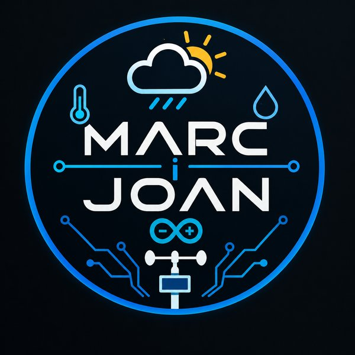

Mesura de la qualitat de l'aire i el confort a les aules
Treball de recerca · 2n de Batxillerat · Institut Maremar (el Masnou) · 2025-26
El projecte
Hem construït centrals de mesura amb ESP32, programades amb blocs, i les hem col·locat a sis aules de l'institut per comprovar si són adequades per fer classe. Les dades s'envien a ThingSpeak i s'analitzen en el treball. Una setena central, l'expositiva, mostra els valors en directe a l'app mòbil.
🌡️ Temperatura
💧 Humitat
🫁 CO₂
☀️ Llum
🔊 So
Documents
Treball de recercaMemòria completa · PDF
AnnexosProgramació, fotografies i dades · PDF
App mòbil
Descarregar l'appNomés per a Android · APK
Per instal·lar-la, el mòbil us demanarà permís per instal·lar apps d'origen desconegut. L'app es connecta per Bluetooth a la central expositiva i mostra els valors en directe.
L'app és només per a Android.
Està feta amb MIT App Inventor i es connecta per Bluetooth a la central expositiva, cosa que l'iPhone no permet. Els documents d'aquesta pàgina sí que es poden obrir.
Està feta amb MIT App Inventor i es connecta per Bluetooth a la central expositiva, cosa que l'iPhone no permet. Els documents d'aquesta pàgina sí que es poden obrir.